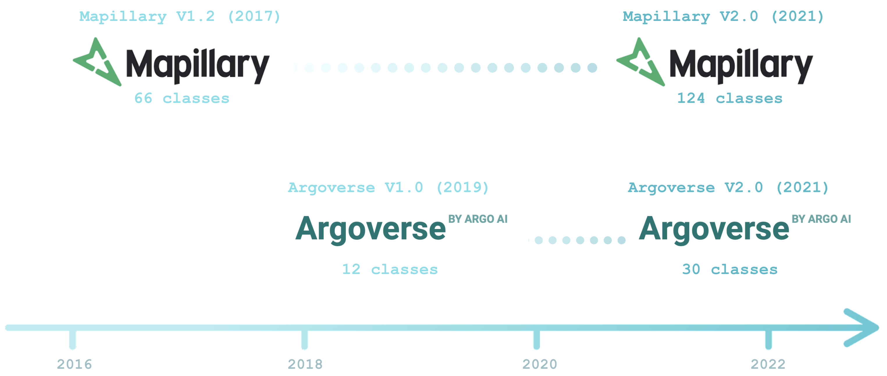
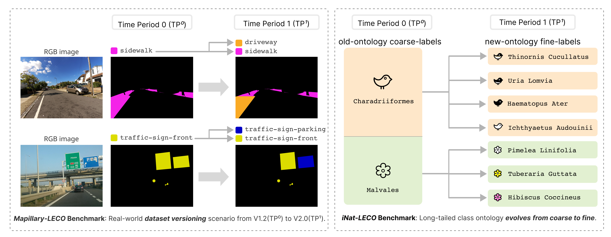
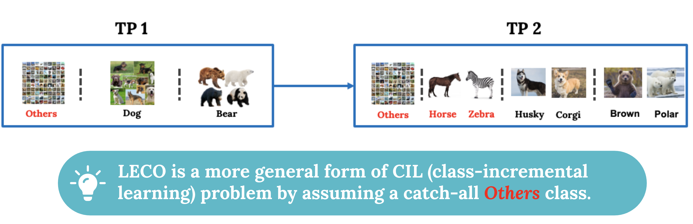
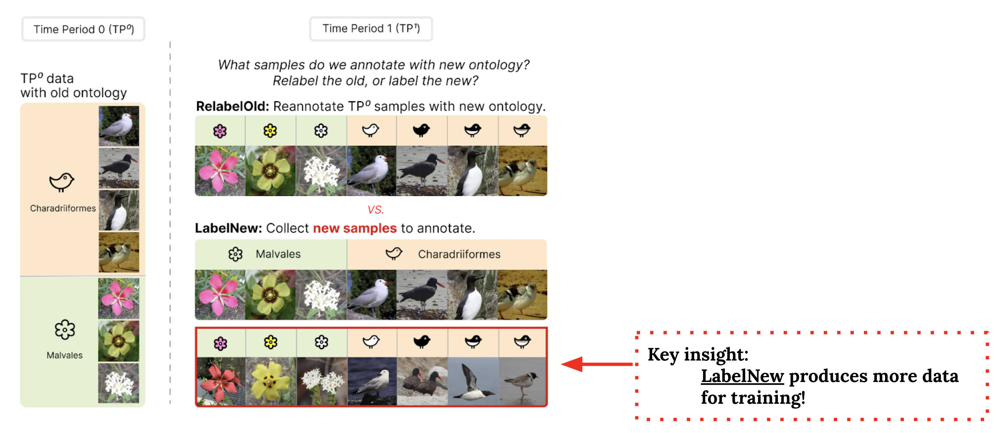
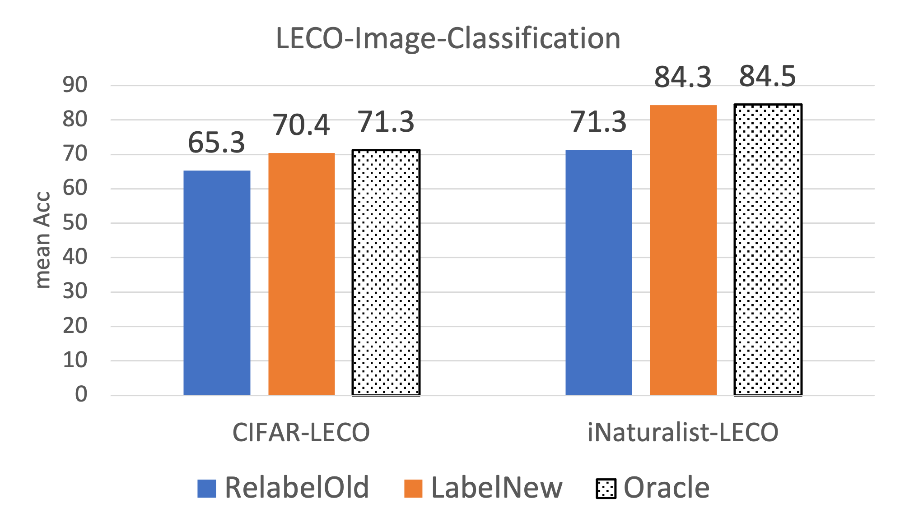
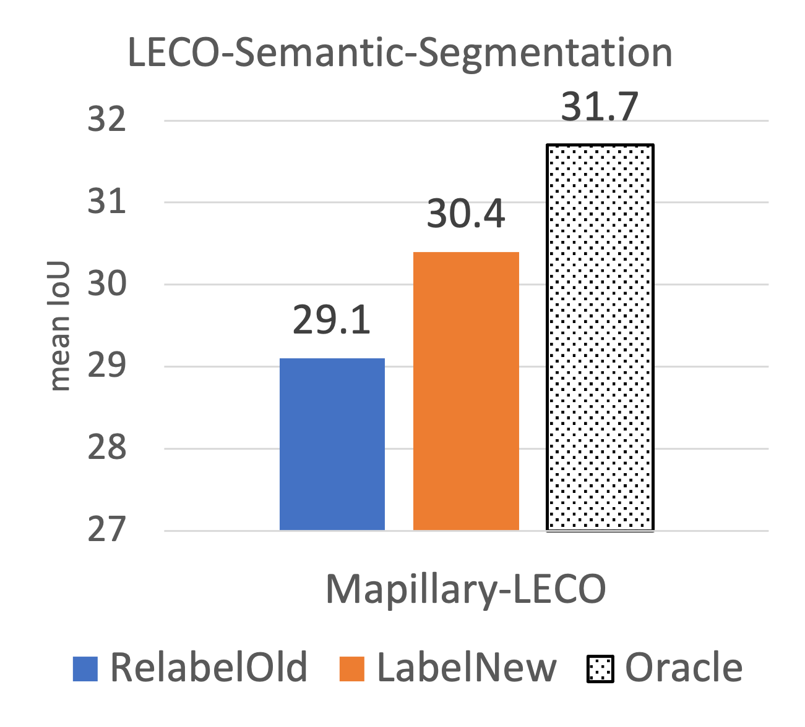
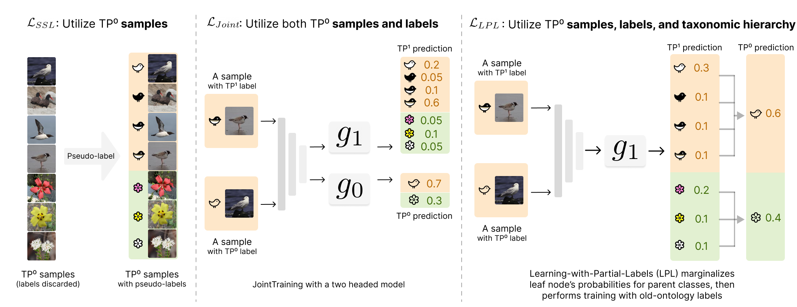

LECO: Learning with an Ever-Changing Ontology
|
CMU1
|
UIUC2
|
Argo AI3
|
Texas A&M University4
|
NeurIPS 2022 Presentation Slides
Please check out our paper and code using the following links:
Abstract
 |
Lifelong learners must recognize concept vocabularies that evolve over time. A
common yet underexplored scenario is learning with class labels that continually
refine/expand old classes. For example, humans learn to recognize dog before
dog breeds. In practical settings, dataset versioning often introduces refinement
to ontologies, such as autonomous vehicle benchmarks that refine a previous
vehicle class into school-bus as autonomous operations expand to new
cities. This paper formalizes a protocol for studying the problem of Learning
with Evolving Class Ontology (LECO). LECO requires learning classifiers in
distinct time periods (TPs); each TP introduces a new ontology of “fine” labels that
refines old ontologies of “coarse” labels (e.g., dog breeds that refine the previous
dog). LECO explores such questions as whether to annotate new data or relabel
the old, how to exploit coarse labels, and whether to finetune the previous TP’s
model or train from scratch. To answer these questions, we leverage insights from
related problems such as class-incremental learning. We validate them under the
LECO protocol through the lens of image classification (on CIFAR and iNaturalist)
and semantic segmentation (on Mapillary). Extensive experiments lead to some
surprising conclusions; while the current status quo in the field is to relabel existing
datasets with new class ontologies (such as COCO-to-LVIS or Mapillary1.2-to-2.0),
LECO demonstrates that a far better strategy is to annotate new data with the new
ontology. However, this produces an aggregate dataset with inconsistent old-vs-new
labels, complicating learning. To address this challenge, we adopt methods from
semi-supervised and partial-label learning. We demonstrate that such strategies can
surprisingly be made near-optimal, in the sense of approaching an “oracle” that
learns on the aggregate dataset exhaustively labeled with the newest ontology.
Motivated from real-world LECO scenarios

Practical visual recognition systems usually face LECO scenarios, exemplified by “dataset versioning” in
autonomous vehicle (AV) datasets. For example, Argoverse V1.0 (2019) expanded its ontology from 12 to 30 classes in order to incorporate safety-critical concepts such as "bus" to "school bus".
LECO Benchmarks on challenging datasets

We repurpose challenging real-world datasets with long-tailed distribution such as Mapillary-1.2-to-2.0 (for semantic segmentation) and iNaturalist (for image classification) when setting up LECO benchmarks.
A More Practical Lifelong Benchmark
Compared to prior continual learning setups, such as class-incremental learning (CIL), LECO stands for a more realistic learning scenario by assuming a coarse-to-fine relationship between old and new ontology. In other words, new classes are always split from old classes.

In practice, most comtemporary datasets embrace a catch-all "others" class for background samples. By incoporating "others" class, LECO is a more general form of class-incremental learning problem:

Lastly, in LECO, history data (from previous TPs) are always preserved. Typical CIL problems however usually limit buffer size to store history data. We argue
instead that such a practice is unreasonable for many practical applications, e.g., self-driving and video surveillance,
where data can be used for legal issues and forensic evidence, and cannot be thrown away, let alone labeled data.
Label new data, or relabel the old?

We study whether to label newly collected data or relabel the old, as we observed both modes in comtemporary dataset curation: Argoverses V2.0 labels new data collected in more recent years, whereas Mapillary V2.0 relabels the same images with new ontology. Despite efforts in collecting new data, we found LabelNew to be preferable because intuitively it accumulates more training data. We
validate that LabelNew produces a better classifier than RelabelOld by training on both new and old-ontology data
accumulated over TPs.
 
Exploiting old-ontology data, labels, and ontology hierarchy
We study various approaches to leverage old-ontology data, including SSL (semi-supervised learning), Joint training, and Learning-with-Partial-Labels (LPL). Despite simplicity, these approaches produce consistent gains over the baseline on all the benchmarks.
|  |
Paper
|
Zhiqiu Lin, Deepak Pathak, Yu-Xiong Wang, Deva Ramanan, Shu Kong.
LECO: Learning with an Ever-Changing Ontology.
NeurIPS 2022.
[Arxiv]
[Code]
|
Bibtex:
Acknowledgements
This research was supported by CMU Argo AI Center for Autonomous Vehicle Research.
|